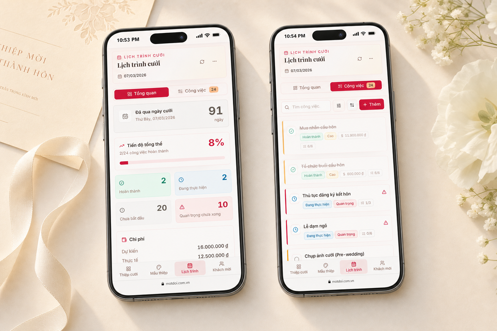

Mục lục bài viết
Một đám cưới không chỉ có ngày tổ chức tiệc. Phía sau ngày vui là những quyết định về hai gia đình, thủ tục pháp lý, nhà cung cấp, khách mời, ngân sách và hàng chục mốc cần xác nhận đúng lúc. Bản hướng dẫn này hệ thống 24 hạng mục lớn, 145 đầu việc và 60 mẹo thực tế thành một lộ trình 6 tháng dễ áp dụng.
Hai bạn không cần tải thêm file Excel rồi chuyền qua lại nhiều phiên bản. Hãy mở Wedding Planner – Lịch trình cưới, chọn ngày cưới và quản lý toàn bộ đầu việc tại một nơi. Khi hoàn thiện phần mời khách, có thể tiếp tục đối chiếu mẫu thiệp cưới và công cụ tạo thiệp để ngày giờ, địa điểm luôn thống nhất.
Tổng quan lộ trình chuẩn bị đám cưới 6 tháng
- 6–4 THÁNG TRƯỚC Chốt địa điểm và các nhà cung cấp khó đổi lịch.
- 3 THÁNG TRƯỚC Xử lý trang phục, nghi lễ, khách mời và trăng mật.
- 2–1 THÁNG TRƯỚC Hoàn thiện pháp lý, thiệp, tráp và trang trí.
- 2 TUẦN CUỐI Xác nhận, bàn giao và chuẩn bị phương án dự phòng.
Nguyên tắc xuyên suốt là: việc càng khó đổi ngày, càng phải chốt sớm. Địa điểm, ekip ảnh–video và makeup artist thường kín lịch trước nhiều tháng; hoa cầm tay hay phòng cưới có thể hoàn thiện gần ngày hơn.
Trước khi bắt đầu: tạo một kế hoạch dùng chung
Trước khi đi vào từng mốc, hai bạn nên thống nhất bốn dữ liệu gốc: ngày cưới dự kiến, ngân sách tối đa, số khách sơ bộ và người có quyền chốt ở mỗi gia đình. Đây là cơ sở để chọn địa điểm, so sánh báo giá và tránh sửa cùng một thông tin ở nhiều nơi.
Trong Lịch trình cưới, mỗi việc có thể được đặt hạn theo ngày cưới, gắn mức quan trọng, người phụ trách, ngân sách dự kiến và checklist con. Hãy dành một buổi ngắn mỗi tuần để cập nhật trạng thái và chi phí thực tế.
6–4 tháng trước: giữ chỗ những hạng mục quan trọng
Chọn địa điểm tổ chức tiệc cưới
- Thống nhất tổ chức tại nhà hàng, khách sạn hay tư gia.
- Ước lượng số khách để chọn sức chứa phù hợp.
- Tham quan thực tế từ hai đến ba địa điểm.
- So sánh menu, dịch vụ đi kèm và chính sách đặt cọc.
- Ký hợp đồng, giữ ngày và lưu rõ điều kiện hoàn cọc.
- Đặt lịch thử món trước khi chốt menu.
Nếu cưới vào cuối năm, nên giữ địa điểm trước sáu tháng. Hãy hỏi cả thời hạn điều chỉnh số bàn, phí phát sinh ngoài giờ, âm thanh–ánh sáng và phương án mưa nếu có không gian ngoài trời.
Giữ lịch ekip ảnh, video và trang điểm
Ekip ảnh giỏi và makeup artist quen tay thường kín lịch những ngày đẹp trước cả nửa năm, nhất là mùa cưới cuối năm — để trễ, hai bạn hoặc phải dời ngày, hoặc chọn phương án không thật ưng. Cũng đừng đánh giá ekip chỉ qua một vài ảnh nổi bật: hãy xem trọn một album và video highlight thực tế, xác nhận rõ ai là người trực tiếp chụp, quay, chỉnh ảnh và thời điểm bàn giao. Với makeup artist, nên gửi trước phong cách mong muốn và đặt lịch trang điểm thử nếu có thể.
Nếu dự định chụp pre-wedding, đây cũng là lúc chọn studio, gói chụp, địa điểm và ngày dự phòng thời tiết. Chụp sớm giúp hai bạn có đủ thời gian chọn ảnh, chỉnh sửa và dùng ảnh cho thiệp.
3 tháng trước: giai đoạn có nhiều việc chạy song song
Cầu hôn và dạm ngõ, nếu chưa thực hiện
Với cặp đôi muốn đưa hành trình cầu hôn vào kế hoạch, hãy dành thời gian chọn nhẫn, đo size vào buổi chiều và ưu tiên cửa hàng hỗ trợ chỉnh size. Buổi cầu hôn nên phù hợp tính cách của người nhận; một địa điểm có ý nghĩa và một người bí mật ghi lại khoảnh khắc thường đáng nhớ hơn cách tổ chức quá phô trương.
Khi chuẩn bị lễ dạm ngõ, hai gia đình cần thống nhất ngày, thành phần tham dự, lễ vật và những nội dung chính sẽ bàn bạc. Hãy hỏi kỹ phong tục địa phương của nhà gái và đặt lễ vật trước khoảng bốn đến sáu tuần.
Trang phục cô dâu và chú rể
- Chọn váy cưới, áo dài và phụ kiện theo từng nghi lễ.
- Chốt vest, sơ mi, giày và phụ kiện của chú rể.
- Mang đôi giày dự kiến khi thử váy để kiểm tra chiều dài.
- Đặt lịch chỉnh sửa và thử lại gần ngày cưới.
- Tập đi giày mới ở nhà để tránh đau chân trong ngày lễ.
- Kiểm tra màu sắc hai bộ trang phục khi đứng cạnh nhau.
Mẫu váy đẹp dễ được giữ lịch sớm; vest may đo thường cần ít nhất bốn đến sáu tuần. Đừng chỉ thử khi đứng yên: hãy ngồi, bước lên bậc, cúi người và giơ tay để chắc chắn trang phục vẫn thoải mái.
Nhẫn cưới, xe hoa, MC và âm nhạc
Nhẫn cưới được đeo hằng ngày nên sự thoải mái quan trọng hơn kiểu dáng cầu kỳ. Nếu khắc tên hoặc ngày cưới, hãy đặt trước ít nhất bốn đến sáu tuần. Với xe hoa, cần xem xe thực tế, xác nhận lộ trình, giờ chờ, số xe đi cùng và chọn khoang đủ rộng nếu váy có nhiều lớp voan.
Nếu sử dụng MC hoặc ban nhạc, hãy xem buổi biểu diễn trực tiếp hoặc video dài, không chỉ nghe bản thu. Hai bạn cũng nên bắt đầu danh sách bài hát, các tiết mục và những điều MC cần tránh nhắc trên sân khấu.
Danh sách khách, sức khỏe và trăng mật
Mỗi bên gia đình lập danh sách riêng, sau đó gộp và loại trùng theo nhóm họ hàng, bạn bè, đồng nghiệp. Nên thống nhất sớm ngưỡng khách tối đa để danh sách không tăng ngoài sức chứa và ngân sách.
Đây cũng là thời điểm hợp lý để bắt đầu lịch ngủ, vận động và chăm sóc da ổn định. Không nên thử mỹ phẩm hay thực phẩm mới trong hai tuần cuối. Nếu đi trăng mật, hãy chốt ngân sách, điểm đến, vé, nơi ở, visa và bảo hiểm du lịch từ bây giờ để có nhiều lựa chọn hơn.
2–1 tháng trước: pháp lý, nghi lễ và thiệp mời
Hoàn thành đăng ký kết hôn
Chuẩn bị giấy tờ tùy thân, giấy xác nhận tình trạng hôn nhân khi cần và kiểm tra quy trình tại UBND phường/xã. Một số nơi yêu cầu đặt lịch; vì vậy nên gọi xác nhận và thực hiện trước lễ cưới một đến hai tháng để không trùng giai đoạn bận nhất.
Chuẩn bị tráp ăn hỏi
- Xác nhận số tráp và lễ vật với hai gia đình.
- Tìm hiểu phong tục tại địa phương nhà gái.
- Xem mẫu, đặt cọc và chốt giờ nhận tráp.
- Thống nhất đội bê tráp, trang phục và giờ tập trung.
- Nhận, kiểm tra tráp trước lễ từ một đến hai ngày nếu điều kiện cho phép.
Số tráp thường là số lẻ như 5, 7, 9 hoặc 11, nhưng không nên mặc định; phong tục và thỏa thuận của hai nhà mới là căn cứ cuối cùng.
Thiết kế thiệp và chốt dữ liệu mời khách
Chốt chính xác tên cha mẹ hai bên, tên cô dâu chú rể, ngày giờ từng nghi lễ, địa chỉ sảnh và số điện thoại liên hệ trước khi duyệt thiệp. Nếu in thiệp giấy, nên in dư khoảng 15–20% và kiểm tra bản mẫu thật kỹ. Có thể kết hợp thiệp giấy cho người lớn tuổi với thiệp cưới online cho bạn bè, đồng nghiệp và khách ở xa. Lễ cưới mang màu sắc truyền thống có thể xem mẫu thiệp Song Hỷ hoặc mẫu thiệp Truyền thống 01 với sắc đỏ và chữ Hỷ.
Trang trí, hoa cầm tay và phòng cưới
Thống nhất theme, bảng màu, backdrop, hoa bàn, khu vực đón khách và phương án thời tiết. Hoa theo mùa thường tươi và có giá hợp lý hơn; màu hoa cầm tay cần được xem cùng váy và tổng thể trang trí. Với phòng cưới, hãy đánh giá sớm phần cần sửa chữa, nhưng chỉ dọn dẹp và hoàn thiện trang trí trước ngày cưới một đến hai ngày.
4–3 tuần trước: gửi thiệp và chốt số khách
- Phân loại khách nhận thiệp giấy và thiệp online.
- Gửi thiệp trước ngày cưới khoảng ba đến bốn tuần.
- Gọi trực tiếp cho người thân và bạn bè thân thiết.
- Theo dõi trạng thái đã gửi và xác nhận tham dự.
- Sắp xếp lưu trú, đưa đón cho khách ở xa nếu có.
- Cập nhật số bàn cho nhà hàng theo hạn trong hợp đồng.
Đừng cộng cố định 10–15% vào số khách rồi đặt dư toàn bộ. Hãy đối chiếu tỷ lệ phản hồi thực tế, chính sách bàn dự phòng và thời hạn nhà hàng cho phép điều chỉnh để quyết định số bàn an toàn.
2 tuần cuối: khóa thay đổi lớn, kiểm tra chi tiết
Giai đoạn này không còn phù hợp để đổi nhà cung cấp chính. Hai bạn nên chuyển sang xác nhận và bàn giao:
- Gọi lại toàn bộ nhà cung cấp: xe, ảnh–video, makeup, MC, ban nhạc, nhà hàng và trang trí.
- Chốt timeline ăn hỏi, đón dâu, lễ gia tiên và tiệc; gửi cùng địa chỉ, người liên hệ cho các bên.
- Thử lại váy, vest, giày và toàn bộ phụ kiện; kiểm tra nhẫn cưới.
- Chuẩn bị phong bì thanh toán, tiền lẻ và bản sao giấy tờ cần thiết.
- Phân công người thân phụ trách đón khách, chỉ chỗ, cầm điện thoại và xử lý nhà cung cấp.
- Chuẩn bị túi khẩn cấp gồm kim băng, băng dính hai mặt, chỉ khâu, thuốc đau đầu, khăn giấy và son.
Sau đám cưới: vẫn còn 7 việc cần hoàn tất
- Trả váy, vest và đồ thuê đúng hạn.
- Thanh toán phần còn lại cho các nhà cung cấp.
- Đếm và ghi chép phong bì mừng.
- Tổng hợp toàn bộ thu–chi thực tế.
- Gửi lời cảm ơn được cá nhân hóa đến khách mời.
- Nhận album, ảnh và video theo hợp đồng.
- Lưu hợp đồng, hóa đơn và những kinh nghiệm cần nhớ.
Một lời cảm ơn riêng theo từng nhóm khách thường chân thành hơn tin nhắn chung. Việc tổng kết ngân sách sau cưới cũng giúp hai bạn đóng lại các khoản còn thiếu và có dữ liệu hữu ích cho kế hoạch tài chính tiếp theo.
Cách theo dõi ngân sách cưới không bị rối
Không cần đoán một con số chung cho mọi đám cưới. Hãy lập dự toán theo hạng mục và cập nhật chi thực tế ngay khi đặt cọc hoặc thanh toán.
| Nhóm chi phí | Cần ghi lại | Điểm dễ phát sinh |
|---|---|---|
| Địa điểm và tiệc | Tiền cọc, giá bàn, số bàn, phí dịch vụ | Bàn dự phòng, đồ uống, quá giờ |
| Ảnh, video, makeup | Giá gói, phụ phí di chuyển, lần thanh toán | Thêm giờ, thêm địa điểm, album |
| Trang phục và nhẫn | Thuê hoặc mua, chỉnh sửa, phụ kiện | Phí đổi mẫu, giặt, trả trễ |
| Nghi lễ và trang trí | Tráp, hoa, backdrop, gia tiên | Hoa ngoài mùa, vận chuyển |
| Thiệp và khách mời | Thiệp giấy, thiệp online, quà cảm ơn | In bổ sung, gửi xa |
| Xe, MC và âm nhạc | Giá thuê, thời gian, tiền cọc | Chờ quá giờ, thiết bị bổ sung |
| Trăng mật và sau cưới | Vé, phòng, visa, bảo hiểm, trả đồ | Đổi lịch, hành lý, thanh toán muộn |
Mỗi tuần, hãy so sánh dự kiến – thực tế – chênh lệch. Khi một nhóm vượt ngân sách, hai bạn sẽ biết cần giảm ở đâu trước khi ký thêm hợp đồng.
Wedding Planner giúp hai bạn quản lý những gì?
Thay vì một checklist tĩnh, Wedding Planner của Một Đời biến ngày cưới thành lịch làm việc có thể cập nhật trên điện thoại:
- Tổng quan theo thời gian thực: đếm ngày đến lễ cưới, tỷ lệ hoàn thành và số việc theo từng trạng thái.
- Ưu tiên đúng việc: làm nổi bật việc quan trọng chưa xong, việc sắp đến hạn và việc quá hạn.
- Checklist chi tiết: tách một hạng mục lớn thành các bước nhỏ và đánh dấu từng bước ngay khi hoàn thành.
- Quản lý chi phí: theo dõi ngân sách dự kiến, từng khoản thực tế và phần chênh lệch.
- Tìm kiếm và sắp xếp: lọc theo trạng thái, mức quan trọng, danh mục; sắp xếp hoặc kéo thả thứ tự công việc.
- Cá nhân hóa kế hoạch: thêm, sửa hoặc lùi việc, ghi chú, gán người phụ trách và bổ sung chi phí phát sinh.

Quy trình sử dụng gọn trong 5 bước
- Mở Lịch trình cưới và chọn một lịch trình đã có hoặc tạo lịch trình mới, không cần tạo thiệp cưới trước.
- Đặt ngày cưới để hệ thống tính thời hạn tương ứng.
- Xem các việc quan trọng và gán người phụ trách.
- Cập nhật checklist, trạng thái và chi phí ngay sau mỗi lần làm việc với nhà cung cấp.
- Mỗi tuần mở màn Tổng quan để xử lý việc trễ hạn và phần ngân sách chênh lệch.
Checklist tốt không buộc mọi đám cưới phải giống nhau. Hai bạn có thể giữ những nghi thức có ý nghĩa với gia đình, lược bỏ phần không phù hợp và thêm việc riêng. Mục tiêu cuối cùng của kế hoạch là giúp cả hai bước vào ngày cưới với ít việc phải nhớ trong đầu hơn — để có thể thật sự ở bên nhau và tận hưởng ngày vui.
Câu hỏi thường gặp
Nên bắt đầu chuẩn bị đám cưới trước bao lâu?
Bốn đến sáu tháng là khoảng thời gian hợp lý để giữ được địa điểm và nhà cung cấp phù hợp. Nếu cưới vào mùa cao điểm hoặc có nhiều nghi lễ, hai bạn nên bắt đầu sớm hơn sáu tháng.
Checklist chuẩn bị đám cưới gồm những hạng mục nào?
Bản kế hoạch này gồm 24 hạng mục lớn và 145 bước con, từ cầu hôn, dạm ngõ, pháp lý, địa điểm, trang phục, khách mời đến việc thanh toán và cảm ơn sau đám cưới.
Chỉ còn hai tháng thì nên ưu tiên việc gì?
Hãy chốt ngay địa điểm, trang điểm, trang phục, ekip ảnh và quay phim nếu còn thiếu; sau đó xử lý đăng ký kết hôn, tráp ăn hỏi, thiệp mời và danh sách khách.
Làm thế nào để kiểm soát chi phí cưới không bị vượt ngân sách?
Ghi ngân sách dự kiến cho từng hạng mục, cập nhật mọi khoản cọc và thanh toán thực tế, rồi kiểm tra phần chênh lệch hằng tuần thay vì đợi đến sau lễ cưới.
Có cần tải file Excel để theo dõi checklist không?
Không. Wedding Planner tại Một Đời cho phép theo dõi tiến độ, checklist con, mức ưu tiên, chi phí dự kiến và thực tế ngay trên điện thoại tại trang Lịch trình cưới.